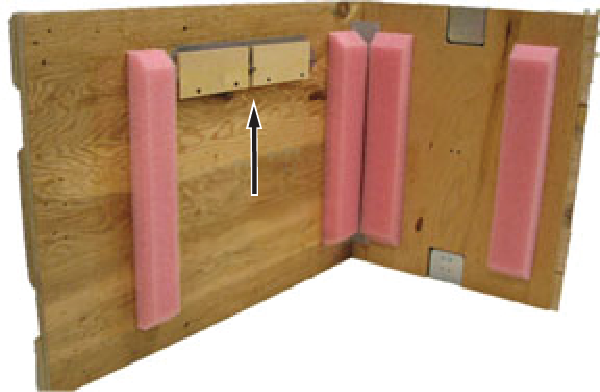
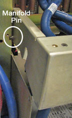

- 00000018WIA30751E20GYZ
- id_131075364.9
- Dec 11, 2024 3:51:29 PM
XRFD and power supply replacement
Prerequisites
| Personnel requirements | |||
|---|---|---|---|
| Required persons | Preliminary requirements | Procedure | Finalization |
| 1 | 5 minutes | 90 to 120 minutes | 5 minutes |
| Tools and test equipment | |||
|---|---|---|---|
| Item | Quantity | Part number | Manufacturer |
| Hoist Service Kit | 1 | 5196226 | - |
| Nonmagnetic Titanium Service Tool Kit, Small Set | 1 | 5113258 | - |
| Consumables | |||
|---|---|---|---|
| Item | Quantity | Part number | Manufacturer |
| Towels | As needed | - | - |
| Tie-wraps | 3 to 5 | - | - |
| Replacement parts | |||
|---|---|---|---|
| Item | Quantity | Part number | Manufacturer |
| 1.5T XRFD RF Amp FRU | 1 | 5317905-17 | - |
| Required conditions |
|---|
| The PGR PDU/gradient subsystem must be locked and tagged out before starting this procedure. See Applying LOTO - PGR Power Distribution Unit (PDU)/Gradient Subsystem. |
| Before disconnecting any coolant lines on the front of the dual drive RF amplifier unit, shutdown the Power Electronics Pump (PPMP) at the Heat Exchanger Cabinet (HEC). |
| Safety | ||||
|---|---|---|---|---|
|
Before working in any GE HealthCare MR suite or doing any GE HealthCare service procedure, you must:
If you have any safety concerns at any time, do not begin work or immediately stop work and move to a safe location. Immediately contact your supervisor or site safety officer for instructions on how to proceed. | ||||
| ||||
| ||||
About this task
This document contains four procedures (two for each style of cabinet): XRFD replacement and XRFD power supply replacement. Both units are in the PGR cabinet. The XRFD weighs about 315 pounds and the XRFD PS weighs 80 pounds. Each unit weighs enough that a hoist kit is required. This document details the correct way to use a hoist kit to safely remove and replace the XRFD and XRFD PS units.

Choose appropriate instruction
About this task
XRFD replacement (with PDM)
Procedure
- Before setting up the hoist kit, detach the XPS J9 connector
to properly remove the main lifting beam.
Figure 2. Lifting beam and connector in PGR cabinet 
- Remove the tie-wraps that hold the power cable. The cable goes underneath the XRFD and along the side of the cabinet to the top of the PDM.
Figure 3. Tie-Wraps on power cable  Note Before continuing, be prepared to absorb any leakage from the coolant lines with a towel in hand as the line is disconnected.
Note Before continuing, be prepared to absorb any leakage from the coolant lines with a towel in hand as the line is disconnected. - Disconnect the power cable at the terminal, the cables on the
front of the XRFD, and the coolant lines. Carefully move the cables
and lines to the side of the cabinet, so the surrounding area is free
from any obstructions when the amplifier is pulled out.
Figure 4. Coolant lines placement 
- Unscrew the eight attachment screws.
Figure 5. XRFD attachment screws 
- Attach the lifting brackets (found in the XRFD FRU crate) to
both sides of the XRFD. The attachment screws are captive screws and
remain with the lifting brackets.
Figure 6. Lifting brackets in FRU crate 
Figure 7. Attaching lifting brackets 
Warning - Hook the winch and spreader bar from the hoist kit to the lifting
bracket. Ratchet the winch to tighten the chain.Note Make sure the hook is seated in the lifting bracket. If not, the weight can shift causing harm to the equipment or the engineer.
Figure 8. Lifting brackets with seated hook 
- With the XRFD unit supported by the hoist kit, unscrew the four
screws and remove the slide rails from both sides.
Figure 9. XRFD slide rails 
- The FRU is packaged in a wooden crate. For the XRFD, there are
four parts to the FRU crate. Remove the top of the wooden crate and
turn it on its base. The XRFD being removed can be placed into the
top. Roll the top underneath the XRFD and lock the wheels so that
the container does not move.
Figure 10. Base of FRU crate 
- Bring the FRU to the front of the cabinet. Attach the slide
rails to the FRU.
Figure 12. XRFD FRU 
XRFD power supply replacement (with PDM)
Procedure
- Remove the XRFD PS faceplate. After the faceplate is pulled away from the unit, do these steps:
- Loosen the two front thumbscrews to allow the manifold tray to swing up.
- Lift the manifold tray and pull it out of the way of the power supply. The manifold has a spring loaded pin that allows the tray to swivel up and down.
Figure 14. Manifold pin on XRFD PS 
- Disconnect the two internal coolant lines.
- Find the long, thin retaining bracket mounted directly above the supply opening. Remove the screws and then the bracket.
- Note If the supply does not slide forward, extend the XRFD from the cabinet and check that the shipping screws have been removed from each side of the XRFD.Remove the two sub-D cables, PSU-1 and PSU-2.
Figure 15. Sub-D cables 
- Hook the winch and spreader bar from the hoist kit to the lifting
bracket. Ratchet the winch to tighten the chain.Note Make sure the hook is seated in the lifting bracket. If not, the weight can shift causing harm to the equipment or the engineer.
Figure 17. XRFD PS with hoist kit 
XRFD replacement (without PDM)
Procedure
- Before setting up the hoist kit, detach the XPS J9 connector
to properly remove the main lifting beam.
Figure 18. Lifting beam and connector in PGR cabinet - Note Before continuing, be prepared to absorb any leakage from the coolant lines with a towel in hand as the line is disconnected.Disconnect the cables on the front of the XRFD, and disconnect the coolant lines. Carefully move the cables and lines to the side of the cabinet, so the surrounding area is free from any obstruction when the amplifier is pulled out.
Figure 19. Coolant lines placement - Remove the PGR base plate by unscrewing the two attached screws.
Figure 20. PGR base plate 
- Unscrew the eight attachment screws.
Figure 21. XRFD attachment screws - Attach the lifting brackets (found in the FRU crate) to both
sides of the XRFD. The attachment screws are captive screws and remain
with the lifting brackets.
Figure 22. Lifting brackets in FRU crate Figure 23. Attaching lifting brackets Warning - Hook the winch and spreader bar from the hoist kit to the lifting
bracket. Ratchet the winch to tighten the chain.Note Make sure the hook is seated in the lifting bracket. If not, the weight can shift causing harm to the equipment or engineer.
Figure 24. Lifting brackets with seated hook - With the XRFD unit supported by the hoist kit, unscrew the four
screws and remove the slide rails from both sides.
Figure 25. XRFD slide rails - The FRU is packaged in a wooden crate. For the XRFD, there are
four parts to the FRU crate. Remove the top of the wooden crate and
turn it on its base. The XRFD being removed can be placed into the
top. Roll the top under the XRFD and lock the wheels so that the container
does not move.
Figure 26. Base of FRU crate - Bring the FRU to the front of the cabinet. Attach the power
cable to the terminal and attach the slide rails to the FRU.
Figure 29. XRFD FRU
XRFD power supply replacement (without PDM)
Procedure
- Unscrew the eight attachment screws.
Figure 30. XRFD attachment screws - Attach the lifting brackets (found in the FRU crate) to both
sides of the XRFD. The attachment screws are captive and remain with
the lifting brackets.
Figure 31. Inside FRU crate - lifting brackets 
- Hook the winch and spreader bar from the hoist kit to the lifting
bracket. Ratchet the winch to tighten the chain. Note Make sure the hook is seated in the lifting bracket. If not, the weight can shift, causing harm to the equipment or engineer.
Figure 32. Lifting brackets with seated hook - Remove the XRFD PS faceplate. After the faceplate is pulled away from the unit, do the following steps:
- Loosen the two front thumbscrews to allow the manifold tray to swing up.
- Lift the manifold tray and pull it out of the way of the power supply. The manifold has a spring loaded pin that allows the tray to swivel up and down.
Figure 35. Manifold pin on XRFD PS - Disconnect the two internal coolant lines.
- Find the long, thin retaining bracket mounted directly above the supply opening. Remove the screws and then remove the bracket.
- NoteRemove the two sub-D cables, PSU-1 and PSU-2.
If the supply does not move forward, extend the XRFD from the cabinet and check that the shipping screws have been removed from each side of the XRFD.
Figure 36. Sub-D cables
- Hook the winch and spreader bar from the hoist kit to the lifting
bracket. Ratchet the winch to tighten the chain.Note Make sure the hook is seated in the lifting bracket. If not, the weight can move causing harm to the equipment or the engineer.
Figure 37. XRFD PS with hoist kit - Hook the winch and spreader bar from the hoist kit to the lifting
bracket. Ratchet the winch to tighten the chain.Note Make sure the hook is seated in the lifting bracket. If not, the weight can shift, causing harm to the equipment or the engineer.
Figure 38. Seated hook